154 Edge tips
-
Override source files to test changes in the browser
It can be helpful to make quick changes to the source code that a site uses, especially when debugging a site in production. For example, if you suspect that a bug is caused by a specific line of code... Read more
-
Override HTTP response headers
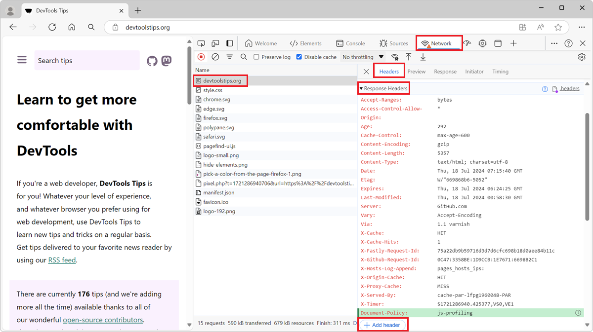
With DevTools, you can override the response headers of a network request and test your website under different conditions. HTTP response headers are metadata sent by the server to the browser, along... Read more
-
Hide elements from the page, without changing the layout
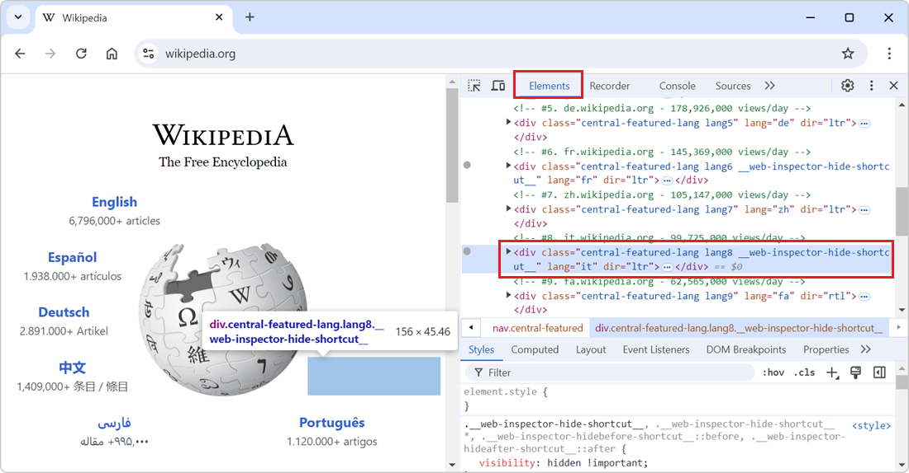
In the DevTools' Elements (or Inspector) tool, you can delete nodes from the DOM tree by selecting them in the tool and then pressing Delete or Backspace. While this is great to completely remove the... Read more
-
Pick a color from the webpage, or the screen
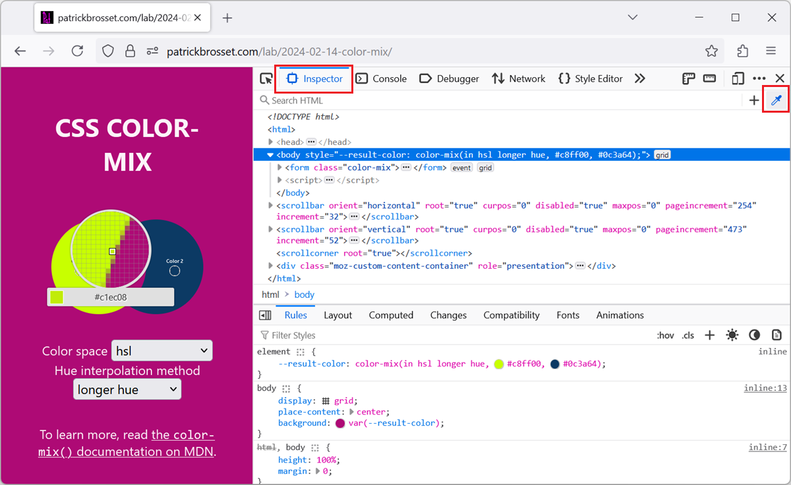
When working with the CSS of a webpage, from the Elements or Inspector tool, in DevTools, there may be times when you want to reuse a existing color from the webpage, or from the screen, but might not... Read more
-
Highlight areas that the browser engine re-paints
 When you scroll through a webpage, or when parts of the webpage change, the browser engine sometimes needs to repaint parts of the page. The process of converting the layout and style information into... Read more
When you scroll through a webpage, or when parts of the webpage change, the browser engine sometimes needs to repaint parts of the page. The process of converting the layout and style information into... Read more -
Display the specificity of a CSS selector
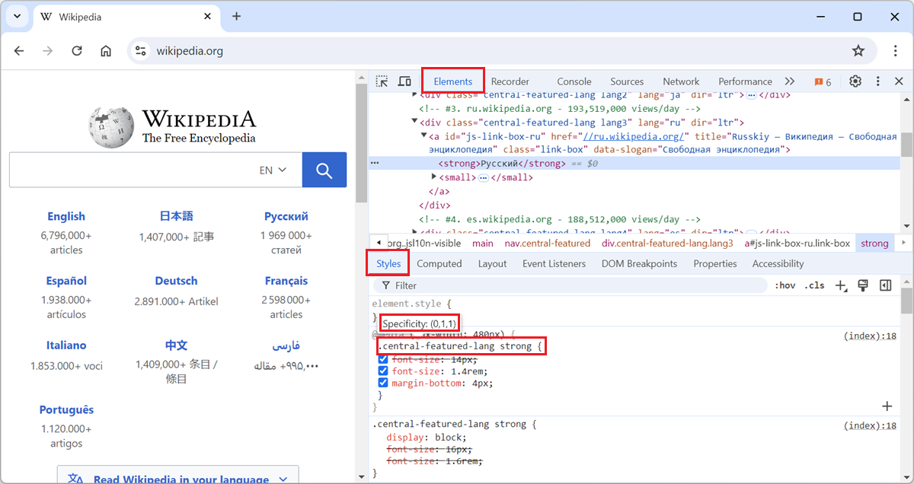
The specificity of a CSS selector is a score that the browser computes based on the different parts of the selector. It is used to determine which CSS rule takes precedence when multiple rules from th... Read more
-
Copy an inline SVG image's source code
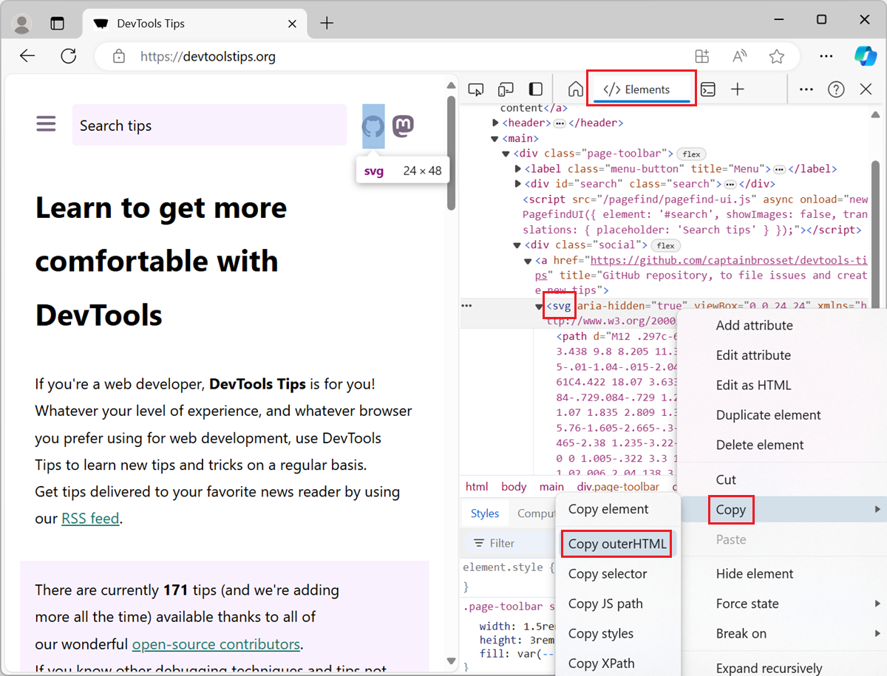
To copy the SVG source code of an SVG image that's embedded directly in the HTML of a webpage, use the Elements tool in DevTools (Inspector in Firefox). To open DevTools, right-click the SVG image i... Read more
-
Disable all CSS styles on the page
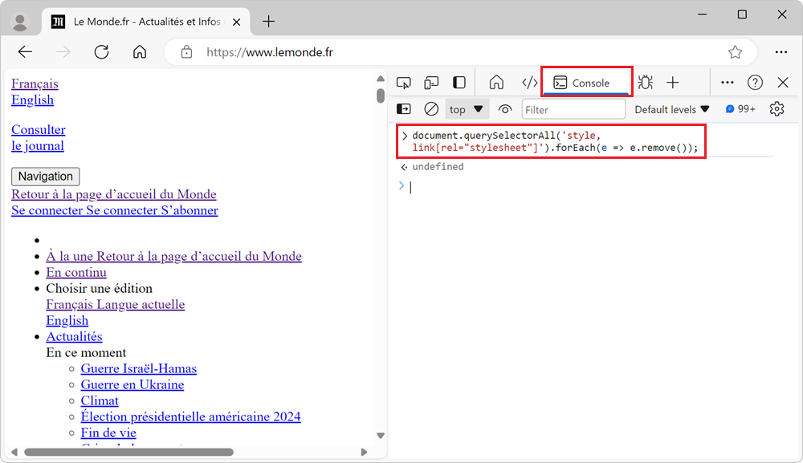
To remove all CSS styles on a webpage, for example to test the accessibility of a page when styles are disabled, or to verify the order in which content is displayed, you can use the techniques below.... Read more
-
Find why a CSS property is overridden
 In CSS, the cascade plays a very important role in which CSS properties apply to an element. This key concept is not explained here, but you can learn more on MDN, at Cascade, specificity, and inherit... Read more
In CSS, the cascade plays a very important role in which CSS properties apply to an element. This key concept is not explained here, but you can learn more on MDN, at Cascade, specificity, and inherit... Read more -
See the accessibility tree
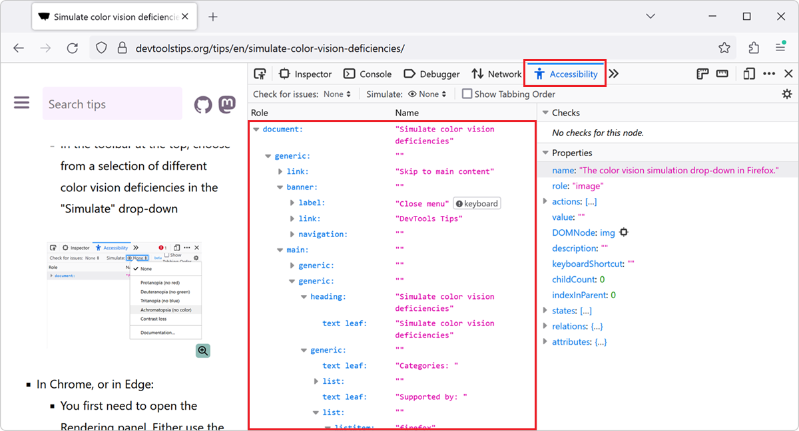
The accessibility tree is a representation of the structure of a web page that is used by assistive technologies such as screen readers. It is similar to the DOM tree, but it only includes the element... Read more
-
Name evaluated files with the sourceURL pragma
 If you insert JavaScript code in a webpage by using the eval() function, or inline <script> tags, you can use the sourceURL pragma to give them a name in DevTools. For example, when using eval()... Read more
If you insert JavaScript code in a webpage by using the eval() function, or inline <script> tags, you can use the sourceURL pragma to give them a name in DevTools. For example, when using eval()... Read more -
Simulate the Window Controls Overlay feature for PWA
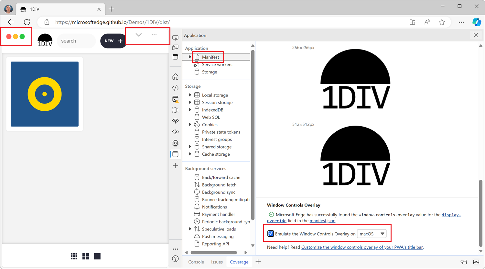
If you're building a desktop PWA, you might want to use the Window Controls Overlay (WCO) feature to make your app look more native. With WCO, you gain control over the entire surface area of the inst... Read more
-
Inspect the user-agent DOM
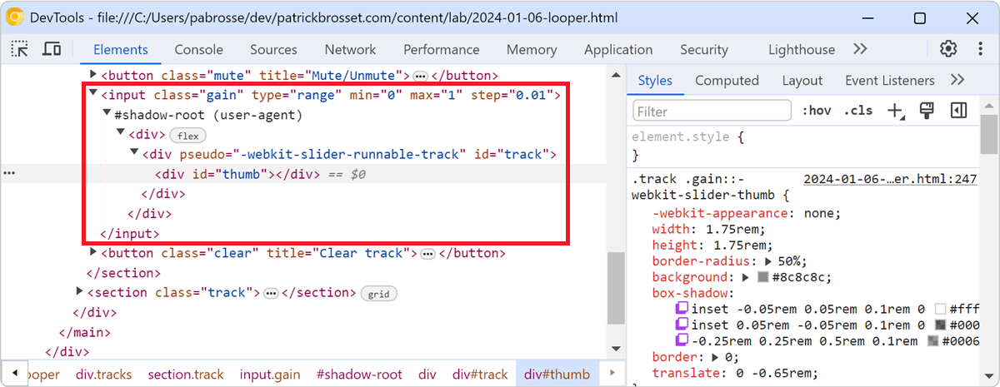
Browsers often add elements to the DOM of your web pages on top of the ones you, yourself, defined. For example, when you create a <video> element, the browser creates a bunch of nested DOM node... Read more
-
Explain console errors by using artificial intelligence
 Edge DevTools lets use the Microsoft Copilot AI assistant to explain errors and warnings in the Console tool. Console errors can sometimes be hard to understand and fix. The large language models that... Read moreCategories: Supported by:
Edge DevTools lets use the Microsoft Copilot AI assistant to explain errors and warnings in the Console tool. Console errors can sometimes be hard to understand and fix. The large language models that... Read moreCategories: Supported by: -
Block DevTools
 There are two levels to consider when talking about blocking (or disabling) DevTools in a browser: Disabling DevTools at the browser level. For example, if you have a browser for web development, and... Read more
There are two levels to consider when talking about blocking (or disabling) DevTools in a browser: Disabling DevTools at the browser level. For example, if you have a browser for web development, and... Read more -
List all event listeners on the entire page
 When you don't know a codebase, it might be hard to know where to get started, and what events are being listened to by which elements. The Console tool, in Chromium-based browsers, comes with a nice... Read more
When you don't know a codebase, it might be hard to know where to get started, and what events are being listened to by which elements. The Console tool, in Chromium-based browsers, comes with a nice... Read more -
Debug popups that appear on hover
 As described in Debug popups that appear on hover using JS and in Debug popups that appear on hover using the debugger statement, there are ways to debug popups that appear on hover using JavaScript.... Read more
As described in Debug popups that appear on hover using JS and in Debug popups that appear on hover using the debugger statement, there are ways to debug popups that appear on hover using JavaScript.... Read more -
Force execution, skipping breakpoints, when paused
 When using breakpoints to debug your JavaScript code, sometimes you end up setting many breakpoints in different functions. You might want to keep these breakpoints but not always pause at them. There... Read more
When using breakpoints to debug your JavaScript code, sometimes you end up setting many breakpoints in different functions. You might want to keep these breakpoints but not always pause at them. There... Read more -
See the viewport size
 The size of the viewport that's used to render a webpage in a browser can be very important at times, such as when creating or debugging media queries. You can easily know what the current size of the... Read more
The size of the viewport that's used to render a webpage in a browser can be very important at times, such as when creating or debugging media queries. You can easily know what the current size of the... Read more -
Convert images to data-urls
 A data URL is a URL that starts with the prefix data: instead of http: or https:. This data prefix (or scheme) allows you to embed the actual content of the resource in the URL itself, rather than lin... Read more
A data URL is a URL that starts with the prefix data: instead of http: or https:. This data prefix (or scheme) allows you to embed the actual content of the resource in the URL itself, rather than lin... Read more -
Use user gesture restricted APIs in the Console
 Certain web APIs are user gesture restricted. This means that they can only be called as a result of a user action, such as in a click event handler. For example, you can't simply put yout website in... Read more
Certain web APIs are user gesture restricted. This means that they can only be called as a result of a user action, such as in a click event handler. For example, you can't simply put yout website in... Read more -
Highlight all elements on the page that match a given CSS selector
 When you select an element in DevTools (in the Elements or Inspector tool), you see the CSS rules that apply to it. But, these rules can also apply to other elements in the page than the currently sel... Read more
When you select an element in DevTools (in the Elements or Inspector tool), you see the CSS rules that apply to it. But, these rules can also apply to other elements in the page than the currently sel... Read more -
Check if a website uses third-party cookies
 Cookies are small files that websites save on your computer when you visit them. Websites often use cookies to remember things about your last visit. For example, a weather website can use cookies to... Read more
Cookies are small files that websites save on your computer when you visit them. Websites often use cookies to remember things about your last visit. For example, a weather website can use cookies to... Read more -
Customize the way objects look in DevTools
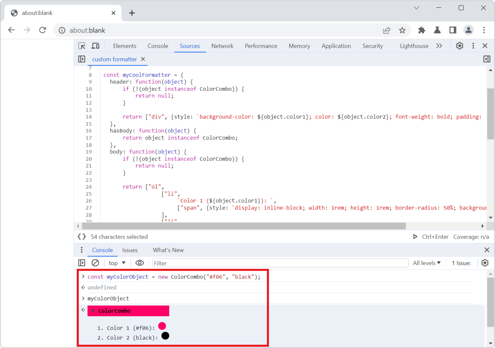
Objects appear in many places in DevTools. Most commonly in the Console tool, but also in various parts of the Sources (or Debugger) tool when you debug JavaScript code. DevTools is the one that decid... Read more
-
Inspect DevTools with DevTools
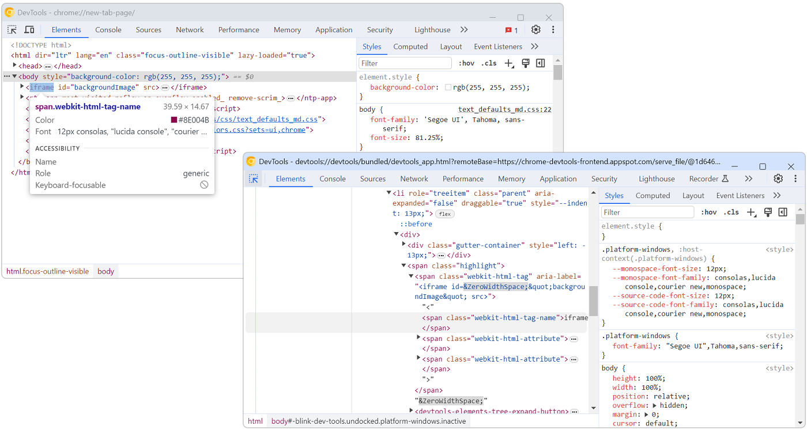
The user interface of DevTools is built with HTML, CSS, and JavaScript. This means you can inspect and debug DevTools with DevTools. Chromium # To debug DevTools in Chromium-based browsers, such as Ch... Read more
-
Create your own DevTools theme
 You can change the color theme of DevTools to match your preference (see Change the color theme of DevTools to learn more), but you can also create your own theme from scratch by creating a browser ex... Read more
You can change the color theme of DevTools to match your preference (see Change the color theme of DevTools to learn more), but you can also create your own theme from scratch by creating a browser ex... Read more -
Find memory leaks by comparing heap snapshots
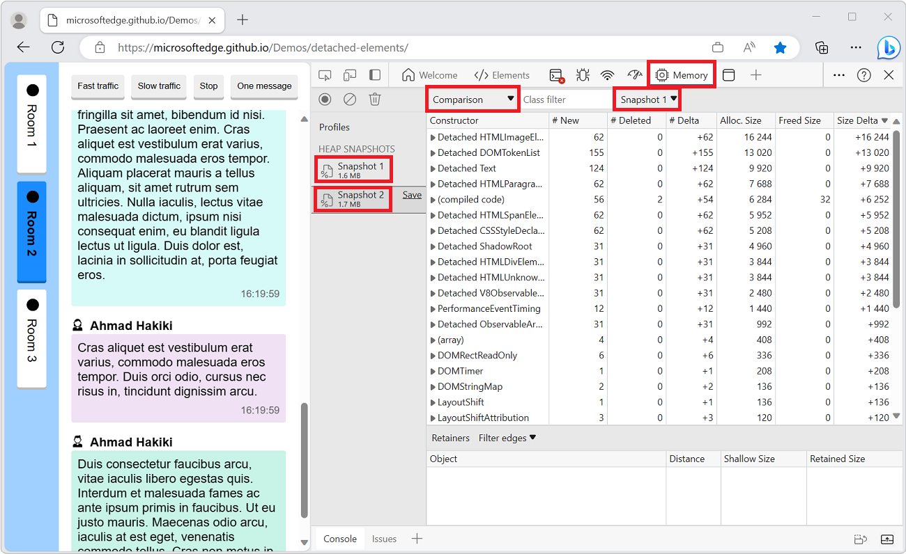
Note: If you think your memory leak comes from DOM nodes, you can also use the Detached Elements tool in Edge, see Get detached DOM elements to investigate memory leaks. Memory leaks are hard to find... Read more
-
Add custom headers to the network table
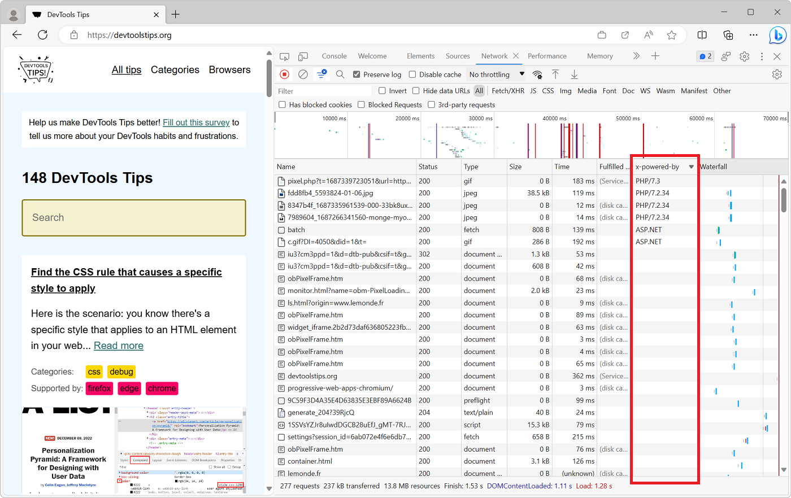
On the web, when a client (a browser) and a server communicate using HTTP, the requests and responses they send to each other contain headers. These headers are key/value pairs that contain metadata a... Read more
-
Find the CSS rule that causes a specific style to apply
 Here is the scenario: you know there's a specific style that applies to an HTML element in your web page, say some padding, but you can't seem to find where, in the CSS code, that style is coming from... Read more
Here is the scenario: you know there's a specific style that applies to an HTML element in your web page, say some padding, but you can't seem to find where, in the CSS code, that style is coming from... Read more -
Understand when the Console opens in the main panel and in the drawer
 Have you noticed how the Console tool is sometimes displayed in a top-level tab (just like all other tools), and sometimes in a split pane at the bottom, below the main tool? If you've been confused b... Read more
Have you noticed how the Console tool is sometimes displayed in a top-level tab (just like all other tools), and sometimes in a split pane at the bottom, below the main tool? If you've been confused b... Read more -
Find all elements with a specific style
 Let's say you want to list all of the elements on a page that are absolutely positioned. Or maybe you want to find all of the elements that use CSS grid. How would you do that? One way is to run a few... Read more
Let's say you want to list all of the elements on a page that are absolutely positioned. Or maybe you want to find all of the elements that use CSS grid. How would you do that? One way is to run a few... Read more -
Inspect and debug iframes
 If the page you are working on contains an iframe which you want to inspect and debug, you can actually use DevTools to do so. This can be very useful when working with coding playground sites like Co... Read more
If the page you are working on contains an iframe which you want to inspect and debug, you can actually use DevTools to do so. This can be very useful when working with coding playground sites like Co... Read more -
Take high-resolution screenshots of web pages
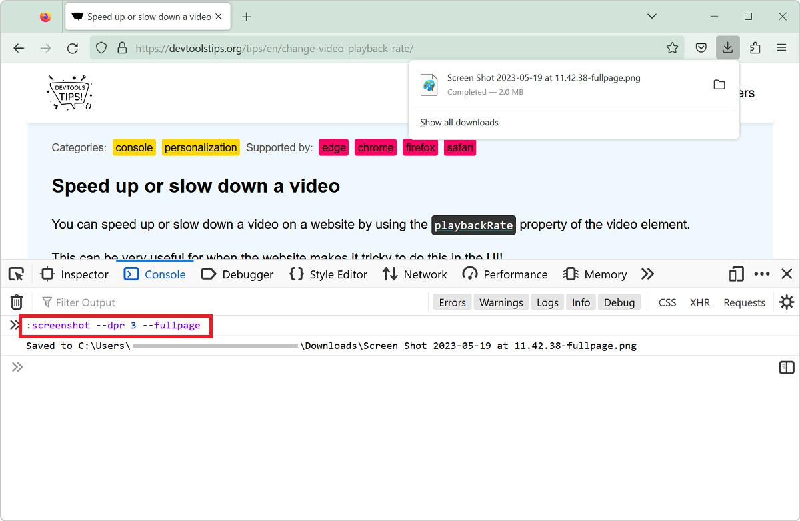
Taking screenshots of all or parts of web pages is super useful (scroll down to the See Also part at the bottom of this page for more tips on that). But sometimes, the resulting screenshots aren't hig... Read more
-
Customize the columns shown in console.table
 The console.table method is great for displaying tabular data in the console, but what if the objects your're logging contain a lot of properties, causing a lot of columns to appear in the console? Fo... Read more
The console.table method is great for displaying tabular data in the console, but what if the objects your're logging contain a lot of properties, causing a lot of columns to appear in the console? Fo... Read more -
Speed up or slow down a video
 You can speed up or slow down a video on a website by using the playbackRate property of the video element. This can be very useful for when the website makes it tricky to do this in the UI! Open Dev... Read more
You can speed up or slow down a video on a website by using the playbackRate property of the video element. This can be very useful for when the website makes it tricky to do this in the UI! Open Dev... Read more -
Debug your print CSS styles by simulating print media
 If you work on a webpage that's supposed to be printed, you probably want to test your print CSS styles. You can use your browser's print preview of course, but what if you need to debug the CSS? DevT... Read more
If you work on a webpage that's supposed to be printed, you probably want to test your print CSS styles. You can use your browser's print preview of course, but what if you need to debug the CSS? DevT... Read more -
Replay a XHR request
 When you're debugging an XHR request to a backend service that doesn't respond with the right things it can be useful to send the request over and over again. Reloading the entire page to do so is ted... Read more
When you're debugging an XHR request to a backend service that doesn't respond with the right things it can be useful to send the request over and over again. Reloading the entire page to do so is ted... Read more -
List the fonts used on a page, or an element
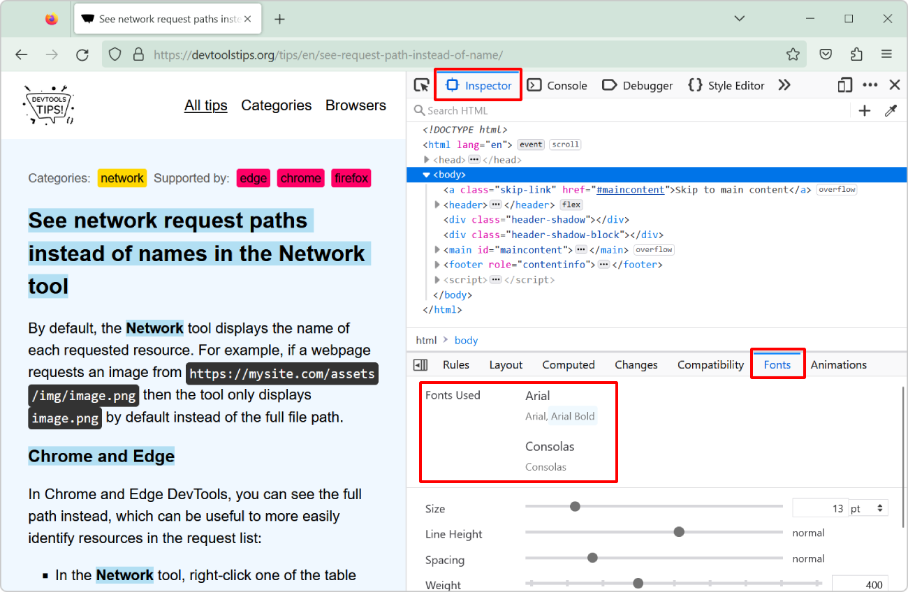
"What font is that?" or "Why is this font used?" are probably questions you've asked yourself while working on a website design. However, it's not always easy to know which fonts a... Read more
-
See network request paths instead of names in the Network tool
 By default, the Network tool displays the name of each requested resource. For example, if a webpage requests an image from https://mysite.com/assets/img/image.png then the tool only displays image.pn... Read more
By default, the Network tool displays the name of each requested resource. For example, if a webpage requests an image from https://mysite.com/assets/img/image.png then the tool only displays image.pn... Read more -
Display the current framerate of your webpage
 For a super smooth user experience on your website or app, it's better if the browser manages to render your page at a high framerate. Ideally, this rate should be 60 frames per second (FPS). This giv... Read more
For a super smooth user experience on your website or app, it's better if the browser manages to render your page at a high framerate. Ideally, this rate should be 60 frames per second (FPS). This giv... Read more -
Detect unused CSS and JavaScript code
 To make sure your webpage loads and appears fast for your users, load only the CSS and JS code that your page requires to appear correctly. If some of your CSS or JS code is only needed later, when th... Read more
To make sure your webpage loads and appears fast for your users, load only the CSS and JS code that your page requires to appear correctly. If some of your CSS or JS code is only needed later, when th... Read more -
Throttle your CPU
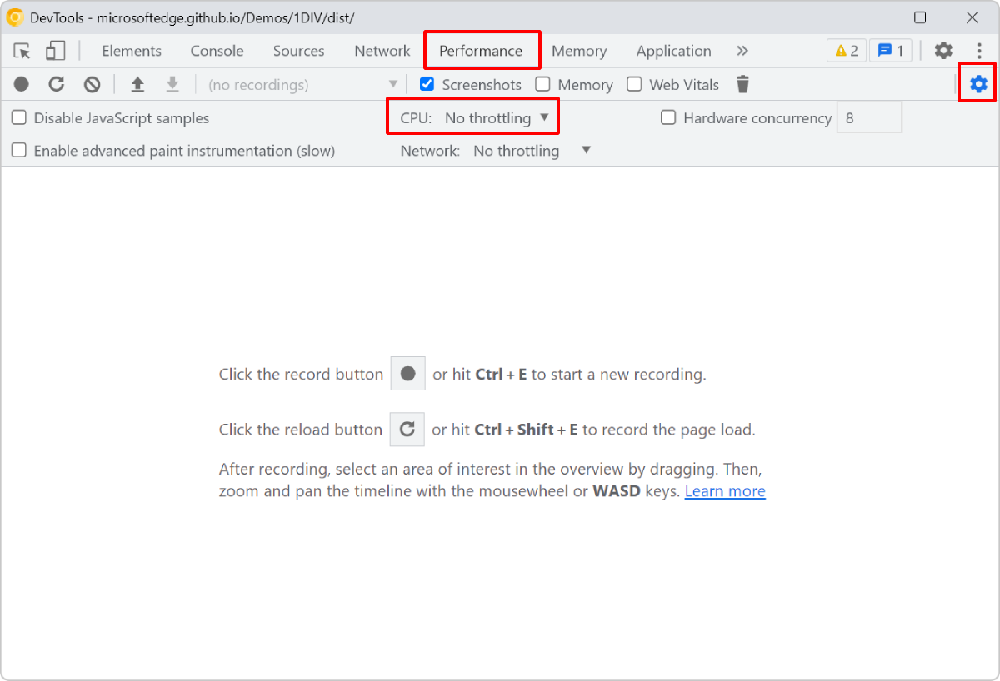
Your development machine is very likely much more powerful than the devices your users have (which are probably low-end mobile devices). Before you ship your new app or site, thinking that it will run... Read more
-
See the size of the transferred data for images, scripts, or other resources
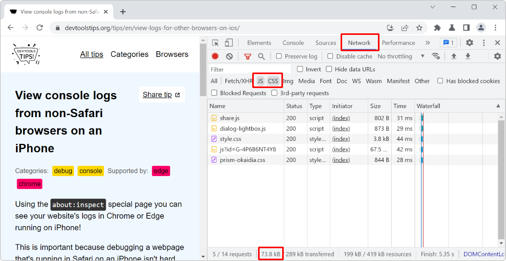
To know how much data your website transfers between the server and the client to display images, or scripts, or anything else: Open the Network tool. Refresh the page to make sure the list of req... Read more
-
View console logs from non-Safari browsers on an iPhone
 Using the about:inspect special page you can see your website's logs in Chrome or Edge running on iPhone! This is important because debugging a webpage that's running in Safari on an iPhone isn't hard... Read more
Using the about:inspect special page you can see your website's logs in Chrome or Edge running on iPhone! This is important because debugging a webpage that's running in Safari on an iPhone isn't hard... Read more -
Disable abusive debugger statements that prevent inspecting websites
 Some websites make it impossible to use DevTools by adding debugger statements in their code. The statements don't do anything for normal users, but as soon as DevTools is opened, the JavaScript execu... Read more
Some websites make it impossible to use DevTools by adding debugger statements in their code. The statements don't do anything for normal users, but as soon as DevTools is opened, the JavaScript execu... Read more -
Emulate color schemes
 In CSS, you can use the prefers-color-scheme media feature (docs) to detect if the user prefers using a light or a dark theme in their operating system. This is useful to style your website in a way t... Read more
In CSS, you can use the prefers-color-scheme media feature (docs) to detect if the user prefers using a light or a dark theme in their operating system. This is useful to style your website in a way t... Read more -
Test your PWA protocol handlers
 Progressive Web Apps (PWA) can register themselves to handle URIs with pre-defined or custom protocols (such as mailto, geo, or web+foo). This is a great capability that makes it possible for installe... Read more
Progressive Web Apps (PWA) can register themselves to handle URIs with pre-defined or custom protocols (such as mailto, geo, or web+foo). This is a great capability that makes it possible for installe... Read more -
See formatted JSON responses
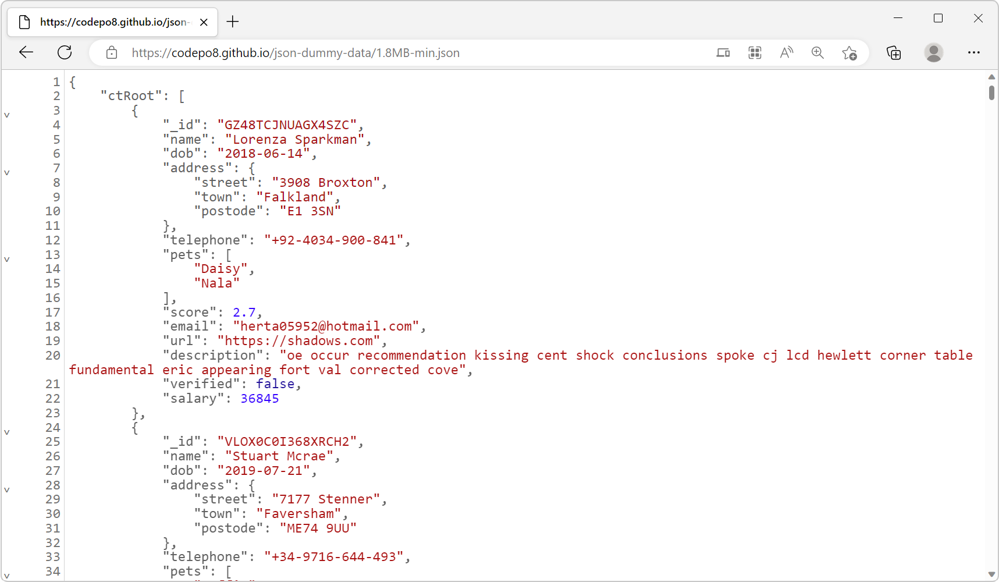
Edge (starting with 110), Firefox and Polypane all have a very nice JSON viewer tool that makes it easy to view JSON responses from your server directly in the browser window. You don't even need to o... Read more
-
Find the most expensive CSS selectors
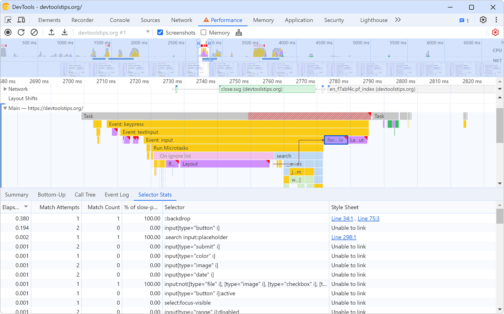
When it comes to improving web rendering performance, we often spend time working on JavaScript code. But CSS has an important role to play too in how fast a web page renders. CSS selectors, in partic... Read more
-
List all supported console functions
 You've probably already used console.log() in your code to print debugging values to the Console tool in DevTools. But the console namespace actually has many other functions too! To list them all, op... Read more
You've probably already used console.log() in your code to print debugging values to the Console tool in DevTools. But the console namespace actually has many other functions too! To list them all, op... Read more -
Hide or pin the information tooltip while inspecting page elements
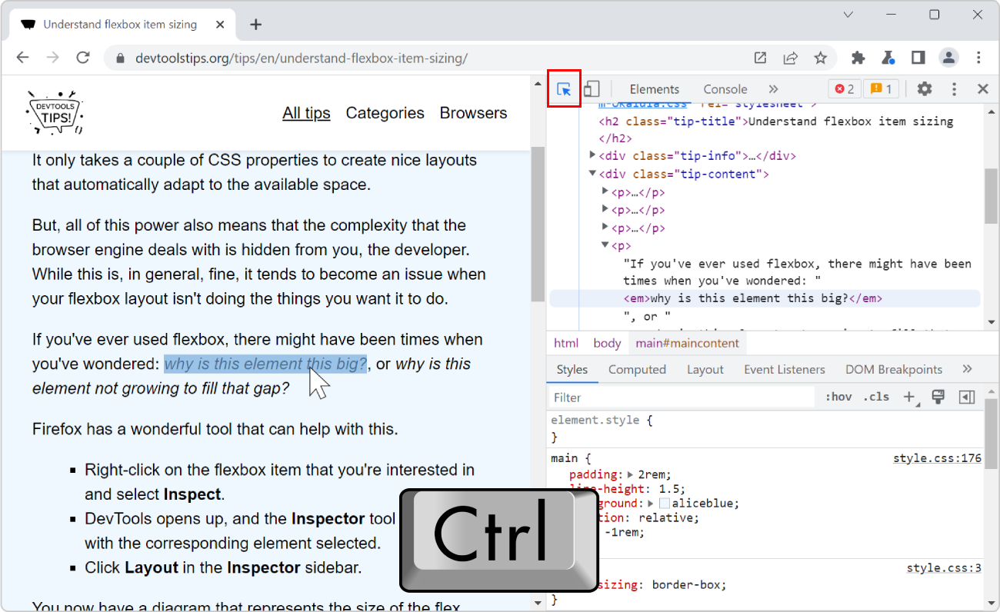
When selecting elements from the page using the inspect tool, the hovered elements get highlighted, and an information tooltip follows your mouse around and gives you information about the hovered ele... Read more
-
Customize keyboard shortcuts
 DevTools comes with tons of keyboard shortcuts. Some are well known (like F12 to open DevTools), but there are many others which you might not be familiar with, and which could make your life easier.... Read more
DevTools comes with tons of keyboard shortcuts. Some are well known (like F12 to open DevTools), but there are many others which you might not be familiar with, and which could make your life easier.... Read more -
Re-use scripts as snippets
 The Console is great to write short JavaScript expressions that read from the document or manipulate it. But it's also a terrible editor. You can actually use a full editor in Edge, Chrome, and Safari... Read more
The Console is great to write short JavaScript expressions that read from the document or manipulate it. But it's also a terrible editor. You can actually use a full editor in Edge, Chrome, and Safari... Read more -
Simulate different devices and screen sizes
 All browser DevTools have a built-in mode that you can use to test a webpage under different screen sizes and device capabilities. As a web developer, it is very important to realize that your website... Read more
All browser DevTools have a built-in mode that you can use to test a webpage under different screen sizes and device capabilities. As a web developer, it is very important to realize that your website... Read more -
Ignore JavaScript code to ease debugging
 Debugging JavaScript can quickly get out of hand when you have a lot of code and many functions that call each other. What's even worse is when a lot of this code isn't even yours. This can happen whe... Read more
Debugging JavaScript can quickly get out of hand when you have a lot of code and many functions that call each other. What's even worse is when a lot of this code isn't even yours. This can happen whe... Read more -
Edit JavaScript functions while debugging to test a quick fix
 Sometimes, when debugging JavaScript code in DevTools, you may want to test a quick change and see whether that fixes the bug. Usually, this involves the following steps: Pause at a breakpoint, or an... Read more
Sometimes, when debugging JavaScript code in DevTools, you may want to test a quick change and see whether that fixes the bug. Usually, this involves the following steps: Pause at a breakpoint, or an... Read more -
Install or create extensions to customize DevTools
 There's a lot of tools in DevTools already, probably more than you use. But in some cases, you may need very specific tools that aren't available by default. Thankfully, DevTools can be extended with... Read more
There's a lot of tools in DevTools already, probably more than you use. But in some cases, you may need very specific tools that aren't available by default. Thankfully, DevTools can be extended with... Read more -
Use DevTools in another language
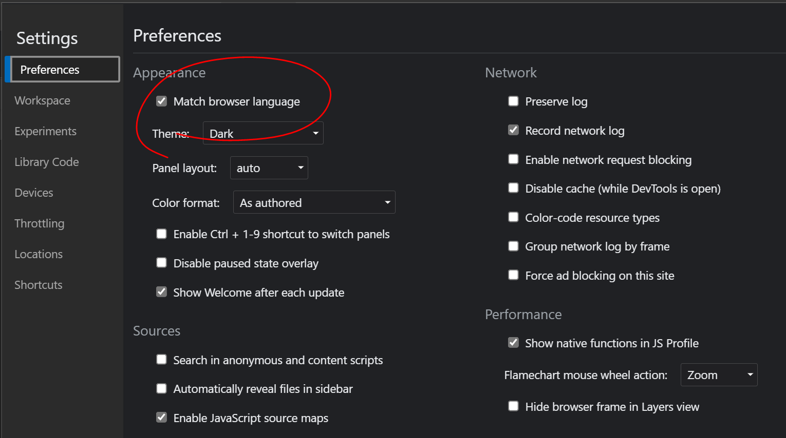
If you want to use DevTools in another language than English, you can do it across all major browsers. In Firefox, DevTools will always match the language of the browser, so if you downloaded Firefox... Read more
-
Access results from recent Console evaluations
 Imagine you evaluate a long expression like $$('*').map(el => Object.values(el.attributes).map(attr => {return {name: attr.name, value: attr.value}})) which extracts the attributes from all of t... Read more
Imagine you evaluate a long expression like $$('*').map(el => Object.values(el.attributes).map(attr => {return {name: attr.name, value: attr.value}})) which extracts the attributes from all of t... Read more -
Simulate a different latitude/longitude geolocation
 If your website has features that depend on the geographic location of your users, you can test these features by simulating different geolocations right from DevTools! Chrome and Edge DevTools have a... Read more
If your website has features that depend on the geographic location of your users, you can test these features by simulating different geolocations right from DevTools! Chrome and Edge DevTools have a... Read more -
Find inactive CSS styles
 Sometimes we write CSS code that's entirely valid but has absolutely no effect at all, and this can be frustrating. Indeed, there are many cases where a CSS declaration has no effect on an element. On... Read more
Sometimes we write CSS code that's entirely valid but has absolutely no effect at all, and this can be frustrating. Indeed, there are many cases where a CSS declaration has no effect on an element. On... Read more -
Get the recently selected DOM nodes in the console
 If you type $0 in the Console tool, in any browser, the currently selected DOM node is returned. This is very handy. To learn more, check Get the selected element in the console. On top of this, in Ed... Read more
If you type $0 in the Console tool, in any browser, the currently selected DOM node is returned. This is very handy. To learn more, check Get the selected element in the console. On top of this, in Ed... Read more -
Inspect CSS animations
 Modern browser DevTools provide a handy tool to inspect and modify CSS animations, CSS transitions, and Web animations. These tools not only help you debug animations, but also let you modify the vari... Read more
Modern browser DevTools provide a handy tool to inspect and modify CSS animations, CSS transitions, and Web animations. These tools not only help you debug animations, but also let you modify the vari... Read more -
Remove annoying page overlays and other elements
 A lot of websites these days get covered with overlays and crammed with lots of ads and other things that make it hard to just read the content of the page. To get rid of an annoying overlay, or any o... Read more
A lot of websites these days get covered with overlays and crammed with lots of ads and other things that make it hard to just read the content of the page. To get rid of an annoying overlay, or any o... Read more -
Copy CSS selector of an element
 To uniquely identify an element that lacks an identifier, so that you can reference the element in JavaScript and other places, use DevTools' ability to copy unique CSS selectors. All DevTools have th... Read more
To uniquely identify an element that lacks an identifier, so that you can reference the element in JavaScript and other places, use DevTools' ability to copy unique CSS selectors. All DevTools have th... Read more -
Copy an element's JavaScript path
 JavaScript often needs references to DOM nodes on the page. Getting a reference is sometimes easy with document.getElementById() or similar. Other times however, a more complicated CSS selector needs... Read more
JavaScript often needs references to DOM nodes on the page. Getting a reference is sometimes easy with document.getElementById() or similar. Other times however, a more complicated CSS selector needs... Read more -
Fix color contrast issues using the element tooltip
 There are multiple ways to detect and fix color contrast issues with DevTools, but here is a nice one to keep in mind. It's not straightforward to use and takes a few steps, but makes it very nice to... Read more
There are multiple ways to detect and fix color contrast issues with DevTools, but here is a nice one to keep in mind. It's not straightforward to use and takes a few steps, but makes it very nice to... Read more -
Empty the cache and hard refresh
 Here is a nice tip to quickly empty your cache and refresh the page, in order to test new code changes: In Chrome, or Edge, open DevTools (F12). This step is not needed for Polypane. Right-click on t... Read more
Here is a nice tip to quickly empty your cache and refresh the page, in order to test new code changes: In Chrome, or Edge, open DevTools (F12). This step is not needed for Polypane. Right-click on t... Read more -
Quickly spot out-of-viewport elements
 Sometimes, either by accident or on purpose, HTML elements end up outside of the visible browser viewport. When they do, it can be really hard to find them in DevTools. Indeed, the DOM tree in the Ele... Read moreCategories: Supported by:
Sometimes, either by accident or on purpose, HTML elements end up outside of the visible browser viewport. When they do, it can be really hard to find them in DevTools. Indeed, the DOM tree in the Ele... Read moreCategories: Supported by: -
Edit an element's attributes and tag name with the keyboard
 Using the keyboard can be faster than using a mouse in certain cases (and for some people). One such case is editing an element's tag name and attributes in DevTools. To do this, select an element in... Read more
Using the keyboard can be faster than using a mouse in certain cases (and for some people). One such case is editing an element's tag name and attributes in DevTools. To do this, select an element in... Read more -
Create your own simulated devices
 You can simulate various different devices from DevTools, to get an idea of how your webpage might render on those devices (note that this is only a simulation, the tool only changes the screen dimens... Read more
You can simulate various different devices from DevTools, to get an idea of how your webpage might render on those devices (note that this is only a simulation, the tool only changes the screen dimens... Read more -
Discover all the tools
 DevTools is confusing! There's so much functionality packed in such a small UI. Did you know that Chrome DevTools had more than 30 individual tools! Yes, that's right, 30. It's hard for both new users... Read more
DevTools is confusing! There's so much functionality packed in such a small UI. Did you know that Chrome DevTools had more than 30 individual tools! Yes, that's right, 30. It's hard for both new users... Read more -
Copy an elements styles
 You can extract all the styles of an element in one go by using the Copy styles feature. No need to go through all CSS rules and properties that apply to the element in the Styles pane, and manually b... Read more
You can extract all the styles of an element in one go by using the Copy styles feature. No need to go through all CSS rules and properties that apply to the element in the Styles pane, and manually b... Read more -
Use document.designMode to spell check your webpage
 Amelia Bellamy-Royds shared a really cool tip to spell-check a webpage's content from DevTools: Open DevTools, and go to the Console tool. Type document.designMode = "on" and press Enter. C... Read more
Amelia Bellamy-Royds shared a really cool tip to spell-check a webpage's content from DevTools: Open DevTools, and go to the Console tool. Type document.designMode = "on" and press Enter. C... Read more -
Visualize and debug CSS cascade layers
 Cascade layers is a CSS feature that allows web developers to define their CSS styles in multiple layers and control the order in which these layers apply. Cascade layers are meant to bring an elegant... Read more
Cascade layers is a CSS feature that allows web developers to define their CSS styles in multiple layers and control the order in which these layers apply. Cascade layers are meant to bring an elegant... Read more -
Automatically get issues your site has with performance, accessibility, security, compatibility, and others.
 Edge has a very useful Issues panel that can automatically list a lot of different issues with your site. It can detect common issues related to browser compatibility, accessibility, performance, secu... Read moreCategories: Supported by:
Edge has a very useful Issues panel that can automatically list a lot of different issues with your site. It can detect common issues related to browser compatibility, accessibility, performance, secu... Read moreCategories: Supported by: -
Take a screenshot of part of a webpage from the Command Menu
 The Command menu in Edge and Chrome is a great way to do many of the things you can do in DevTools without having to navigate the UI. Csaba Kissi shared a great tip on Twitter about the Command menu:... Read more
The Command menu in Edge and Chrome is a great way to do many of the things you can do in DevTools without having to navigate the UI. Csaba Kissi shared a great tip on Twitter about the Command menu:... Read more -
Quickly reference React components in the console
 Zee shared a great tip on Twitter if you are working with React and have the React DevTools extension installed. You can use $r in the Console tool to reference the currently selected element in the R... Read more
Zee shared a great tip on Twitter if you are working with React and have the React DevTools extension installed. You can use $r in the Console tool to reference the currently selected element in the R... Read more -
Start your HTML and CSS prototypes in the browser directly
 Sometimes I need a blank canvas to prototype an idea with HTML and CSS. Something outside of the website I'm working on. Maybe I need a new layout or component and I'm not sure yet how to do it. In th... Read more
Sometimes I need a blank canvas to prototype an idea with HTML and CSS. Something outside of the website I'm working on. Maybe I need a new layout or component and I'm not sure yet how to do it. In th... Read more -
Fix low color contrast issues
 With DevTools you can detect low color contrast issues which is great. But Chrome DevTools, Edge DevTools, and Polypane, you can go one step further and fix these issues directly! In Chrome and Edge #... Read more
With DevTools you can detect low color contrast issues which is great. But Chrome DevTools, Edge DevTools, and Polypane, you can go one step further and fix these issues directly! In Chrome and Edge #... Read more -
Debug popups that appear on hover using the debugger statement
In Debug popups that appear on hover using JS we described how to pause the debugger to inspect popups that appear on hover and disappear as soon as the cursor moves away. Here's another way to do thi... Read more
-
console.log() is great, but do you know console.table()? console.group()? console.assert()?
 You probably know about console.log() already, it's a great way to print variables and objects to the console while the code is running, to debug it. But there are other console methods that can help... Read more
You probably know about console.log() already, it's a great way to print variables and objects to the console while the code is running, to debug it. But there are other console methods that can help... Read more -
Debug CSS grid areas
 A really useful way to position elements on a CSS grid is using the grid-template-areas property. With it, you can give names to various areas of your grid (potentially spanning multiple cells), and t... Read more
A really useful way to position elements on a CSS grid is using the grid-template-areas property. With it, you can give names to various areas of your grid (potentially spanning multiple cells), and t... Read more -
Emulate forced-color mode
 Operating systems offer an accessibility feature where the colors shown on the screen are converted to offer higher contrast. When you use this feature, it impacts all the content on the screen: your... Read more
Operating systems offer an accessibility feature where the colors shown on the screen are converted to offer higher contrast. When you use this feature, it impacts all the content on the screen: your... Read more -
Check if your site can be instantly reloaded from bfcache
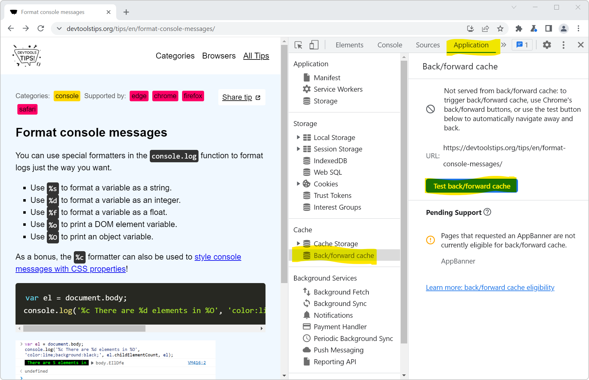
Most browsers are now able to instantly go back to previously visited pages without having to wait for them to load. This ability is powered by the back/forward cache (or bfcache). Firefox, Safari, an... Read more
-
Send feedback, ask for features and report bugs
 Browser vendors depend on your feedback to build the right tools for you. Without hearing from you all about what problems you have, or what features you lack, they can't take the right decisions abo... Read more
Browser vendors depend on your feedback to build the right tools for you. Without hearing from you all about what problems you have, or what features you lack, they can't take the right decisions abo... Read more -
Manipulate complex JSON files using DevTools
 I often work with large amount of data that I need to go through and gather interesting information from. Sometimes this data is in JSON format. When that's the case, I like using DevTools to turn it... Read more
I often work with large amount of data that I need to go through and gather interesting information from. Sometimes this data is in JSON format. When that's the case, I like using DevTools to turn it... Read more -
Detect low color contrast issues
 Low color vision is very common, and your choice of text and background colors can negatively impact people's experience of your website. What seems legible to you might not be for everyone. DevTools... Read more
Low color vision is very common, and your choice of text and background colors can negatively impact people's experience of your website. What seems legible to you might not be for everyone. DevTools... Read more -
Paste multiple CSS declarations at once
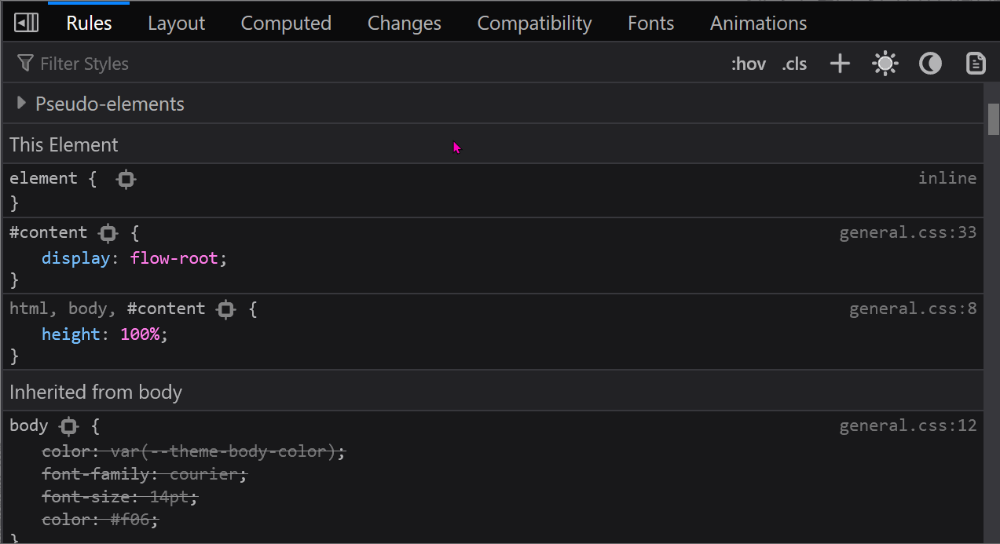
You know how you can paste a CSS property name or value in the Styles (or Rules) panel? Well, you can actually paste several declarations at once too! For example, try copying the following entire CSS... Read more
-
Detect the element with focus at any time
 If you want to know which element has the focus on the web page at any time, you can use a live expression in the Console tool. Open the Console. Click the Create live expression button (it looks lik... Read more
If you want to know which element has the focus on the web page at any time, you can use a live expression in the Console tool. Open the Console. Click the Create live expression button (it looks lik... Read more -
Use full browser window for device emulation
 Emulating different devices in the browser is incredibly useful. It gets tricky when you are on a device with limited resolution as the emulated device needs to be zoomed down to fit the screen as a l... Read more
Emulating different devices in the browser is incredibly useful. It gets tricky when you are on a device with limited resolution as the emulated device needs to be zoomed down to fit the screen as a l... Read more -
Record and replay user flows
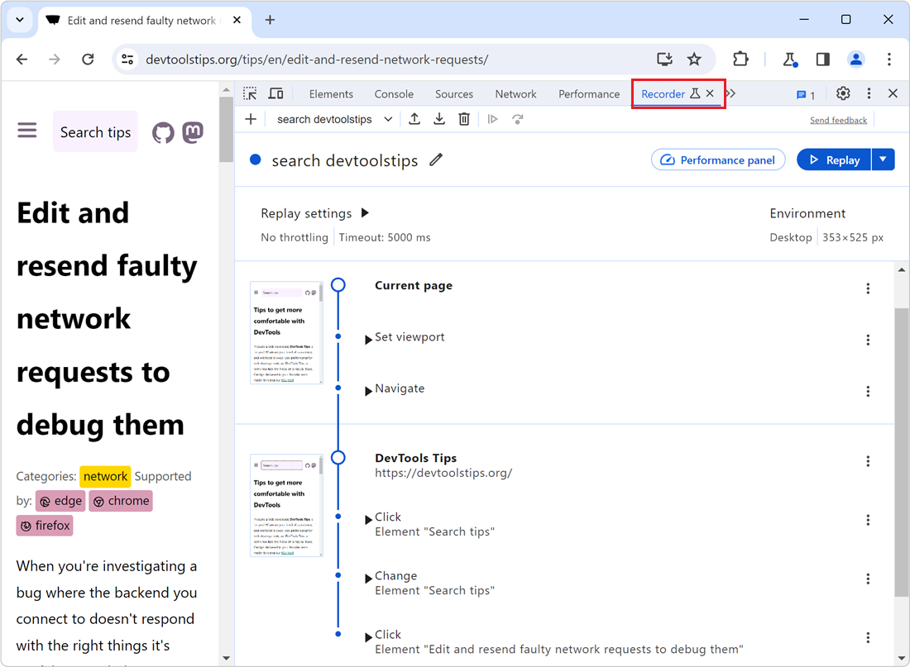
Sometimes, you need to repeatedly test the same user scenario on a website. This can happen when working on a fix or a performance improvement. Testing the same user scenario over and over again requi... Read more
-
Remove or disable event listeners
 When you're trying to debug something and event listeners on the page keep interfering with what you're doing, it can be frustrating. Imagine a mousemove event listener that changes some of the inform... Read more
When you're trying to debug something and event listeners on the page keep interfering with what you're doing, it can be frustrating. Imagine a mousemove event listener that changes some of the inform... Read more -
Select elements with pointer-events:none by holding Shift
 When selecting elements from the page they normally get highlighted on hover and selected on click. However certain elements can't be selected. Indeed, if an element does not react to pointer events b... Read more
When selecting elements from the page they normally get highlighted on hover and selected on click. However certain elements can't be selected. Indeed, if an element does not react to pointer events b... Read more -
Get detached DOM elements to investigate memory leaks
 Memory leaks can quickly become a big problem for long-running applications, and a common source of memory leaks is detached DOM elements (elements that are no longer attached to the DOM tree). It's u... Read moreCategories: Supported by:
Memory leaks can quickly become a big problem for long-running applications, and a common source of memory leaks is detached DOM elements (elements that are no longer attached to the DOM tree). It's u... Read moreCategories: Supported by: -
Write code on multiple lines in the Console
 If you're feeling adventurous and want to write longer pieces of code in the Console to execute more complex things, it can quickly become difficult. Thankfully, there are a few ways to make your life... Read more
If you're feeling adventurous and want to write longer pieces of code in the Console to execute more complex things, it can quickly become difficult. Thankfully, there are a few ways to make your life... Read more -
Download all images from the page
 If you want to download all of the images on a webpage in one go, you can use the following few lines of JavaScript code to do it: $$('img').forEach(async (img) => { try { const src = img.src;... Read more
If you want to download all of the images on a webpage in one go, you can use the following few lines of JavaScript code to do it: $$('img').forEach(async (img) => { try { const src = img.src;... Read more -
Edit and resend faulty network requests to debug them
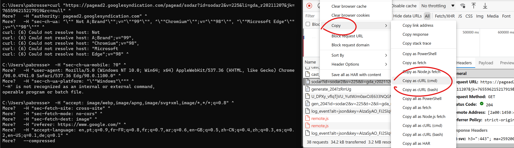
When you're investigating a bug where the backend you connect to doesn't respond with the right things it's useful to tweak the requests and try again quickly. You can do this by changing your fronten... Read more
-
Highlight the effect of individual CSS properties on hover
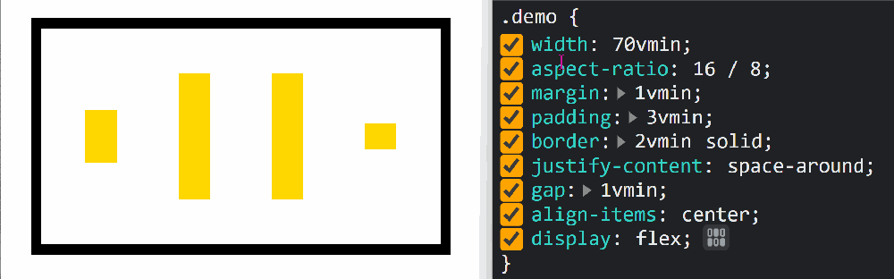
How do certain CSS properties apply to the page isn't always an easy question to answer. While some properties might be considered simple, others have complex effects that depend on other factors. Pro... Read more
-
Copy a CSS rule as CSS-in-JS format
 Do you use a CSS-in-JS framework? If so, you know how frustrating it can be to copy CSS from DevTools and paste it into your code. Indeed if the CSS you worked on in the Styles panel looks like this:... Read more
Do you use a CSS-in-JS framework? If so, you know how frustrating it can be to copy CSS from DevTools and paste it into your code. Indeed if the CSS you worked on in the Styles panel looks like this:... Read more -
Scroll an element into view
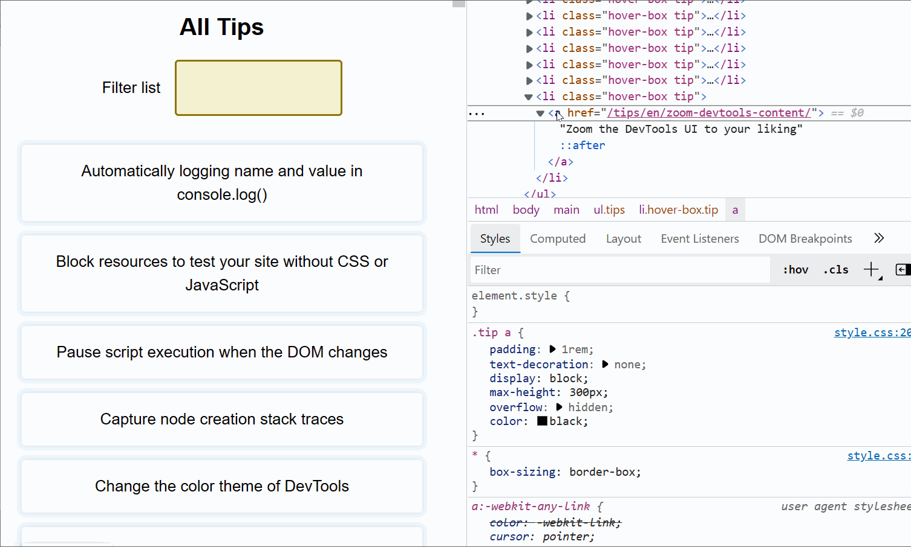
If the inspected web page is long with a lot of elements, and its DOM tree is big and complex, it's easy to get lost, not knowing where the selected element is in the page. DevTools has got your back... Read more
-
Take screenshots of your site in a device frame
 Taking a photo of a mobile device or tablet is daunting as you have to deal with fingerprints, glare and focus issues. Using Device Emulation makes this a lot easier. To take a screenshot of a web pa... Read more
Taking a photo of a mobile device or tablet is daunting as you have to deal with fingerprints, glare and focus issues. Using Device Emulation makes this a lot easier. To take a screenshot of a web pa... Read more -
Take a screenshot of a single node
 In Firefox, Chrome, Polypane and Edge DevTools, you can screenshot a single node from the page. Go to the Elements panel (or Inspector panel in Firefox). Right-click on the node you want to screensho... Read more
In Firefox, Chrome, Polypane and Edge DevTools, you can screenshot a single node from the page. Go to the Elements panel (or Inspector panel in Firefox). Right-click on the node you want to screensho... Read more -
Automatically logging name and value in console.log()
 Using the console of DevTools you can to log some information to debug your JavaScript. The common way to do that is to add a console.log() statement where you want to learn the value of a certain var... Read more
Using the console of DevTools you can to log some information to debug your JavaScript. The common way to do that is to add a console.log() statement where you want to learn the value of a certain var... Read more -
Move panels to re-arrange them
 Moving panels around the user interface can be very useful to make DevTools more unique to you and adapted to your needs. There are 2 ways that you can re-arrange panels in DevTools today: dragging th... Read more
Moving panels around the user interface can be very useful to make DevTools more unique to you and adapted to your needs. There are 2 ways that you can re-arrange panels in DevTools today: dragging th... Read more -
Format console messages
 You can use special formatters in the console.log function to format logs just the way you want. Use %s to format a variable as a string. Use %d to format a variable as an integer. Use %f to format a... Read more
You can use special formatters in the console.log function to format logs just the way you want. Use %s to format a variable as a string. Use %d to format a variable as an integer. Use %f to format a... Read more -
Simulate pseudo CSS classes
 If you use :hover, :active, or other pseudo-classes in your CSS code, it can be tedious to test them. For example, having to hover over an element which is styled with the :hover pseudo-class means th... Read more
If you use :hover, :active, or other pseudo-classes in your CSS code, it can be tedious to test them. For example, having to hover over an element which is styled with the :hover pseudo-class means th... Read more -
Zoom the DevTools UI to your liking
 Do you find the UI of DevTools too small to comfortably work with? Because this UI is made of HTML and CSS, just like any other web pages, it can be zoomed in (or out) by the browser just like you can... Read more
Do you find the UI of DevTools too small to comfortably work with? Because this UI is made of HTML and CSS, just like any other web pages, it can be zoomed in (or out) by the browser just like you can... Read more -
See the page in 3D
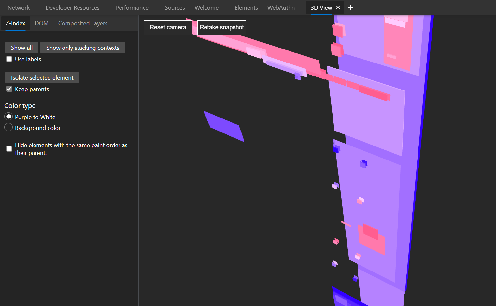
See your page in 3 dimensions to quickly find out how deeply nested it is, fix z-index stacking issues, and performance issues. In Edge # Open the Command Menu by pressing ctrl+shift+P (or cmd+shift+... Read more
-
Cut down on console noise using live expressions
 Using the Console of DevTools to log information that changes a lot is a bad idea. First of all, you flood it with information. Secondly, it can impact the performance of your product. And last but no... Read more
Using the Console of DevTools to log information that changes a lot is a bad idea. First of all, you flood it with information. Secondly, it can impact the performance of your product. And last but no... Read more -
Easily change CSS number values from the keyboard in increments of 0.1, 1, 10, 100
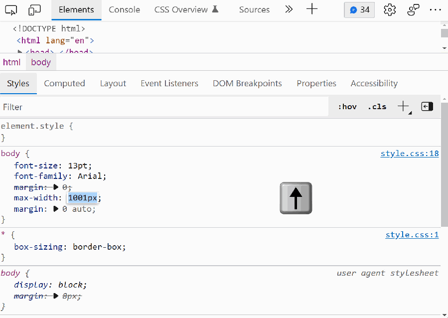
When playing with styling or layout code in DevTools, it's useful to be able to change widths, margins, and other CSS number values quickly. Manually entering new numbers works of course, but it gets... Read more
-
Get contextual DevTools help
 Edge has a feature called the DevTools Tooltips that gives you help about the different tools right inside of DevTools. There are several ways to enable it: Press ctrl+shift+H (or cmd+shift+H on mac)... Read moreCategories: Supported by:
Edge has a feature called the DevTools Tooltips that gives you help about the different tools right inside of DevTools. There are several ways to enable it: Press ctrl+shift+H (or cmd+shift+H on mac)... Read moreCategories: Supported by: -
Find and export CSS changes
 If you spent time changing CSS in DevTools, either in the Rules panel (in Firefox), or in the Sources or Styles panels (in Chrome or Edge), and you don't remember all of the changes you made, you can... Read more
If you spent time changing CSS in DevTools, either in the Rules panel (in Firefox), or in the Sources or Styles panels (in Chrome or Edge), and you don't remember all of the changes you made, you can... Read more -
Use commands to do things faster
 There is a command menu in Edge and Chrome that allows you to quickly access many different features of DevTools without having to navigate the UI. Press Ctrl+Shift+P on Windows or Linux (or Cmd+Shift... Read more
There is a command menu in Edge and Chrome that allows you to quickly access many different features of DevTools without having to navigate the UI. Press Ctrl+Shift+P on Windows or Linux (or Cmd+Shift... Read more -
Evaluate XPath to find elements in the page
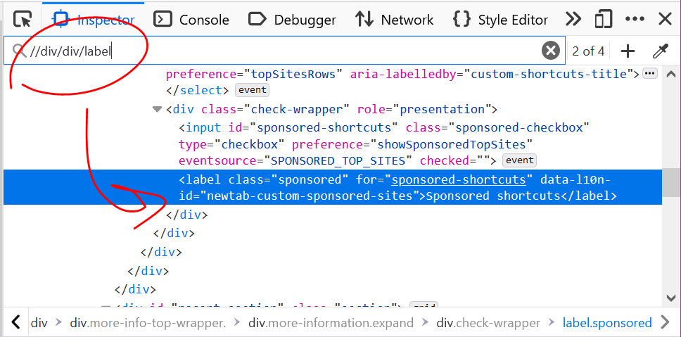
DevTools supports 2 ways to evaluate XPath expressions to help you locate elements in the page. All browsers support those 2 ways: From the Elements (or Inspector) panel: Click anywhere in the panel... Read more
-
Store a node as a variable to use it in the console
 If you want to use a DOM node from the page in the console: Right-click the node in the Elements (or Inspector in Firefox). Click on Store as global variable (or Use in Console in Firefox). The Cons... Read more
If you want to use a DOM node from the page in the console: Right-click the node in the Elements (or Inspector in Firefox). Click on Store as global variable (or Use in Console in Firefox). The Cons... Read more -
Console.log() for the web with logpoints
 Using the console to log some information is a very common way to debug your JavaScript. But you can also log information in any web site using Logpoints in the sources panel. Here's how to do it: I... Read more
Using the console to log some information is a very common way to debug your JavaScript. But you can also log information in any web site using Logpoints in the sources panel. Here's how to do it: I... Read more -
Debug popups that appear on hover using JS
 Have you ever been frustrated because you couldn't style a popup or tooltip that appeared on hover? If it uses JavaScript to get displayed, it's hard to style without modifying the code to make it sta... Read more
Have you ever been frustrated because you couldn't style a popup or tooltip that appeared on hover? If it uses JavaScript to get displayed, it's hard to style without modifying the code to make it sta... Read more -
Monitor all events dispatched on an element
 You can use the monitorEvents global function in the Console panel to log all of the events dispatched on a particular element. Select an element in the Elements panel. Go to the Console. Type monito... Read more
You can use the monitorEvents global function in the Console panel to log all of the events dispatched on a particular element. Select an element in the Elements panel. Go to the Console. Type monito... Read more -
Edit CSS shadow visually
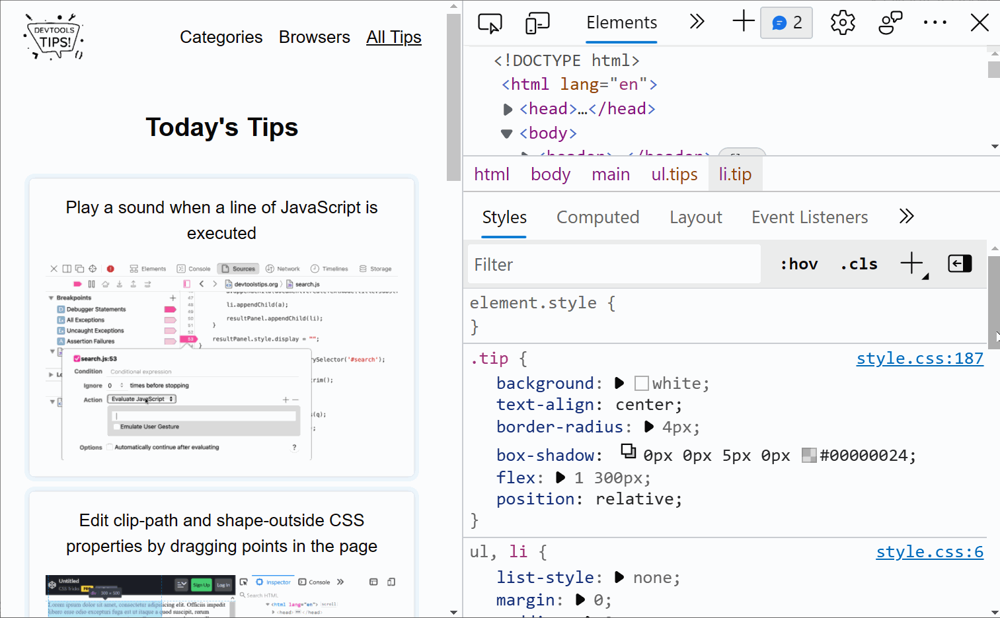
If you don't remember the CSS syntax for the box-shadow property (and who does!), then Chrome and Edge can help you with their visual shadow editor! Select an element that has some shadow applied. Go... Read more
-
Hide resources loaded by extensions in the Network panel
 If you want to hide scripts and other resources loaded by browser extensions in the Network panel, use the -scheme:chrome-extension pattern in the filter input box. Credits go to Sunil for his post on... Read more
If you want to hide scripts and other resources loaded by browser extensions in the Network panel, use the -scheme:chrome-extension pattern in the filter input box. Credits go to Sunil for his post on... Read more -
Jump from a CSS variable usage to where it is defined
 CSS custom properties (also called variables) are very useful to avoid repeating values in CSS, like colors for example. You can define and use a custom property as shown below: rule-1 { --my-main-co... Read more
CSS custom properties (also called variables) are very useful to avoid repeating values in CSS, like colors for example. You can define and use a custom property as shown below: rule-1 { --my-main-co... Read more -
Pause script execution when the DOM changes
 If you want to know what JavaScript code removes, adds, or modifies a DOM element in the page, you can use DOM breakpoints in DevTools. You can choose to break on: Subtree modification: this pauses e... Read more
If you want to know what JavaScript code removes, adds, or modifies a DOM element in the page, you can use DOM breakpoints in DevTools. You can choose to break on: Subtree modification: this pauses e... Read more -
Convert color formats
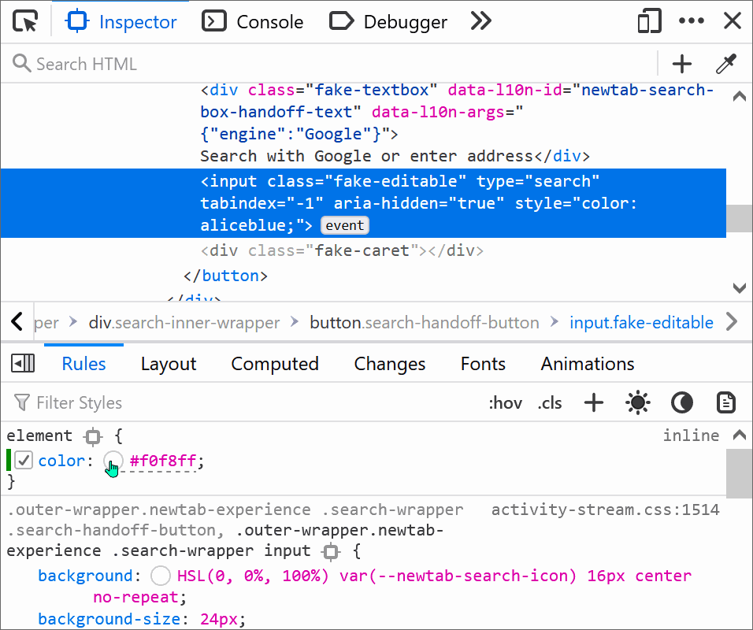
Colors in CSS can be expressed in a number of different formats: keyword (e.g. blue), RGB, HSL, hexadecimal, and others. In DevTools, you can easily convert from one format to the next. Find an eleme... Read more
-
Change the color theme of DevTools
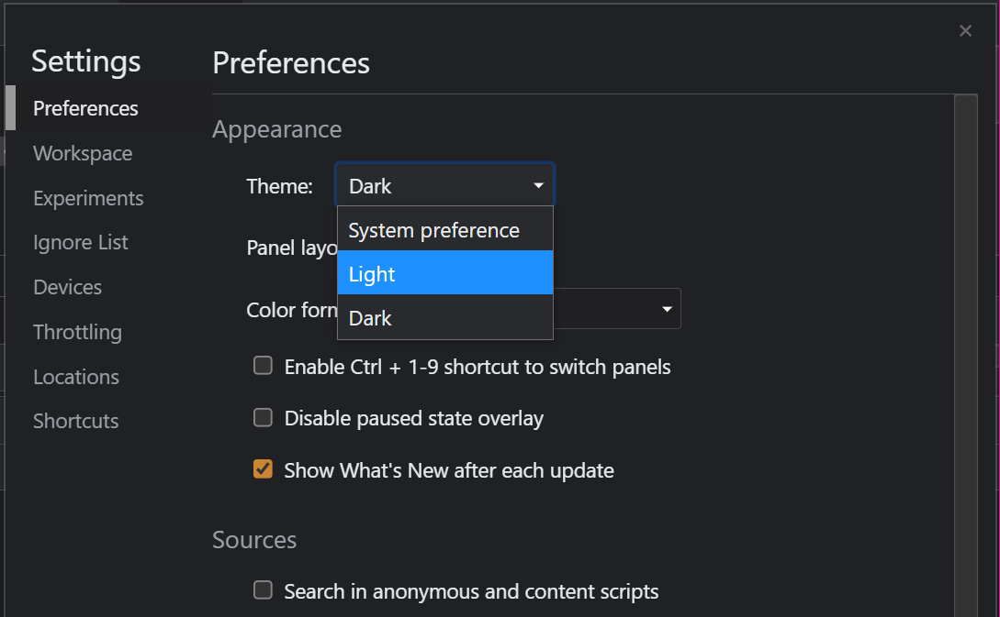
Chrome, Firefox and Safari all have a light and dark theme for their DevTools. On top of these two themes, Edge also has about 10 VS Code themes such as Monokai and Solarized Dark. To change the theme... Read more
-
Force PWA periodic background syncs
 The periodic background sync API, available to PWAs is a great way to fetch new content while the user isn't on the site, and while they have access to the network, to make sure they have the latest c... Read more
The periodic background sync API, available to PWAs is a great way to fetch new content while the user isn't on the site, and while they have access to the network, to make sure they have the latest c... Read more -
Visualize the screen reader order for elements within the page
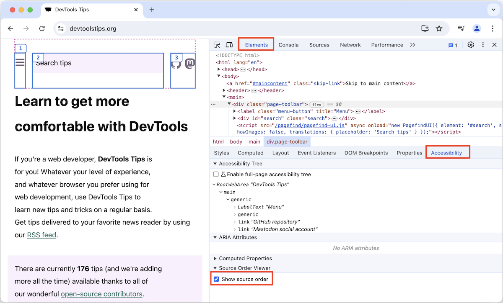
Some users make use of assistive technology, like screen readers (e.g. Narrator, VoiceOver, NVDA), to consume the content of web pages and interact with them. If a screen reader presents the content i... Read more
-
Block resources to test your site without CSS or JavaScript
 The various resources loaded by your site aren't always guaranteed to reach your users when they visit your site. Network problems can occur, JavaScript may be disabled, a CDN may be down, or the brow... Read more
The various resources loaded by your site aren't always guaranteed to reach your users when they visit your site. Network problems can occur, JavaScript may be disabled, a CDN may be down, or the brow... Read more -
Prototype content changes with designMode
 When creating or modifying a design prototype for the web, you may want to quickly edit content in the browser without having to find the relevant code. When you turn on designMode for the document or... Read more
When creating or modifying a design prototype for the web, you may want to quickly edit content in the browser without having to find the relevant code. When you turn on designMode for the document or... Read more -
Capture node creation stack traces
 Have you ever wanted to know what caused a specific DOM node or element to be created in the page? When working on a site that uses a lot of JavaScript and especially when you don't know the codebase,... Read more
Have you ever wanted to know what caused a specific DOM node or element to be created in the page? When working on a site that uses a lot of JavaScript and especially when you don't know the codebase,... Read more -
Throttle the network speed to test your website on slower connections
 While you may develop your website on a fast network connection at home or at work, your users may not be able to use it with an equally fast connection. Perhaps they're in a moving car, or on the sub... Read more
While you may develop your website on a fast network connection at home or at work, your users may not be able to use it with an equally fast connection. Perhaps they're in a moving car, or on the sub... Read more -
Copy an element's XPath expression
 You can easily copy an element's XPath expression from DevTools. This is useful if you need this expression for an automated test for example. Go to the Elements (or Inspector) panel Use the context-... Read more
You can easily copy an element's XPath expression from DevTools. This is useful if you need this expression for an automated test for example. Go to the Elements (or Inspector) panel Use the context-... Read more -
Convert font property units
 Font CSS properties such as font-size, line-height or letter-spacing can be expressed in multiple different length units (like many other CSS properties). Firefox, Chrome and Edge allow you to convert... Read more
Font CSS properties such as font-size, line-height or letter-spacing can be expressed in multiple different length units (like many other CSS properties). Firefox, Chrome and Edge allow you to convert... Read more -
Find DevTools reference documentation
 If you want to learn more about what other tools exist in a browser, or what features a given tool provides, you can find reference documentation from all the major browsers here: Firefox Developer T... Read more
If you want to learn more about what other tools exist in a browser, or what features a given tool provides, you can find reference documentation from all the major browsers here: Firefox Developer T... Read more -
Drag and drop nodes in the DOM tree
 If you need to move nodes or elements around in the DOM tree, to re-order things in the page, you can do it by drag and dropping nodes around in the Elements (or Inspector) panel.... Read more
If you need to move nodes or elements around in the DOM tree, to re-order things in the page, you can do it by drag and dropping nodes around in the Elements (or Inspector) panel.... Read more -
Event listeners are suppressed when paused
 This is not really a tip, but rather an interesting thing to be aware of when debugging JavaScript. If you use breakpoints in the Sources (or Debugger) tab in DevTools to debug JavaScript, you should... Read more
This is not really a tip, but rather an interesting thing to be aware of when debugging JavaScript. If you use breakpoints in the Sources (or Debugger) tab in DevTools to debug JavaScript, you should... Read more -
Sample colors from the page
 Being able to sample colors from the page is super useful. Firefox, Edge and Chrome all allow you to do this in 2 different ways: In Firefox it's really simple and doesn't even require opening DevToo... Read more
Being able to sample colors from the page is super useful. Firefox, Edge and Chrome all allow you to do this in 2 different ways: In Firefox it's really simple and doesn't even require opening DevToo... Read more -
Apply CSS styles to console messages
 The console.log output can be styled in DevTools using CSS. console.log('%c Hello World', 'color: orange; font-size: 2em;');... Read more
The console.log output can be styled in DevTools using CSS. console.log('%c Hello World', 'color: orange; font-size: 2em;');... Read more -
Find all images without alternative text
 With HTML, you can add alternative text to images using the alt attribute. It can be used to add a text description to images, which is extremely useful for accessibility as some people may not be abl... Read more
With HTML, you can add alternative text to images using the alt attribute. It can be used to add a text description to images, which is extremely useful for accessibility as some people may not be abl... Read more -
Draw a box around all elements to debug your CSS and page structure
 Simple, yet powerful, * { outline: 1px solid red; } is a useful debugging trick that helps understanding the page structure, finding overflow bugs or understand why elements are being pushed away for... Read more
Simple, yet powerful, * { outline: 1px solid red; } is a useful debugging trick that helps understanding the page structure, finding overflow bugs or understand why elements are being pushed away for... Read more -
Find DOM elements from the console
 $ and $$ are 2 functions you can use in the console to find elements in the page. They are essentially shortcuts to the longer document.querySelector() and document.querySelectorAll() functions, but $... Read more
$ and $$ are 2 functions you can use in the console to find elements in the page. They are essentially shortcuts to the longer document.querySelector() and document.querySelectorAll() functions, but $... Read more -
Persist console messages across page navigations and reloads
 By default, the messages displayed in the console get removed as soon as you refresh the page (or navigate to a new page). If you want to keep those messages as long as DevTools is open, follow these... Read more
By default, the messages displayed in the console get removed as soon as you refresh the page (or navigate to a new page). If you want to keep those messages as long as DevTools is open, follow these... Read more -
Simulate color vision deficiencies
 People who visit your web pages may have different types of color vision deficiencies that, if you incorrectly use colors for meaning, may affect their experience. Firefox, Chrome, Polypane and Edge m... Read more
People who visit your web pages may have different types of color vision deficiencies that, if you incorrectly use colors for meaning, may affect their experience. Firefox, Chrome, Polypane and Edge m... Read more -
Edit CSS angles
 In CSS, several different properties use angle unit values, such as the rotate() function of a transform or the linear-gradient orientation of a background-image, and more. In Chrome and Edge, whereve... Read more
In CSS, several different properties use angle unit values, such as the rotate() function of a transform or the linear-gradient orientation of a background-image, and more. In Chrome and Edge, whereve... Read more -
Copy an object from the console
 The console panel supports a very handy copy() function that stringifies and copies anything you pass to it as an argument, so you can then paste it somewhere else. For example: copy($$('a').map(a =&g... Read more
The console panel supports a very handy copy() function that stringifies and copies anything you pass to it as an argument, so you can then paste it somewhere else. For example: copy($$('a').map(a =&g... Read more -
Get the selected element in the console
 If you selected an element in the Elements panel (in Chrome, Safari, Polypane or Edge) or the Inspector panel (in Firefox), you can refer to it in the console using $0. This shortcut will return the D... Read more
If you selected an element in the Elements panel (in Chrome, Safari, Polypane or Edge) or the Inspector panel (in Firefox), you can refer to it in the console using $0. This shortcut will return the D... Read more -
Tweak css grid and flexbox alignment properties
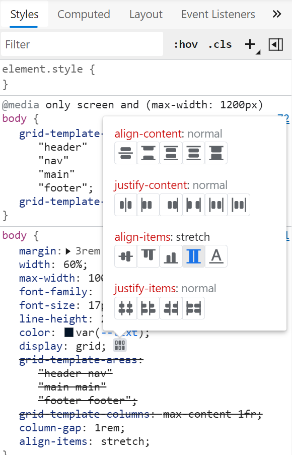
Chrome and Edge both have a visual editor useful for tweaking flexbox and grid alignment properties. Head over to the Elements panel Select an element that is either a grid or flexbox container In th... Read more
-
See quick accessibility information on hover
 In Edge, Polypane and Chrome, whenever you use the element selector and hover over elements in the page, a tooltip appears with, among other things, some accessibility information about the hovered el... Read more
In Edge, Polypane and Chrome, whenever you use the element selector and hover over elements in the page, a tooltip appears with, among other things, some accessibility information about the hovered el... Read more -
Filter requests in the Network panel by status code, mime type and more
 The Network panel lets you filter requests by status code, or mime type, and more. Click in the filter input field in the toolbar. Start typing status-code, you should see an autocomplete popup letti... Read more
The Network panel lets you filter requests by status code, or mime type, and more. Click in the filter input field in the toolbar. Start typing status-code, you should see an autocomplete popup letti... Read more -
View performance markers in order
 When logging performance.timing events to the console, they appear in alphabetical order since they are properties of the PerformanceTiming object. In order to view them in order, you can use console.... Read more
When logging performance.timing events to the console, they appear in alphabetical order since they are properties of the PerformanceTiming object. In order to view them in order, you can use console.... Read more -
Unminify JavaScript code to easily read and debug it
 Sometimes, the JavaScript code that runs on a website is minified and really hard to read. This is common in production. You can unminify code in DevTools to read it more easily, and also set breakpoi... Read more
Sometimes, the JavaScript code that runs on a website is minified and really hard to read. This is common in production. You can unminify code in DevTools to read it more easily, and also set breakpoi... Read more -
Highlight all the elements that a CSS rule matches
 When you want to know which elements a given CSS rule will apply to, in addition to the currently selected element, you can: In Firefox: In the Style Editor panel: hover over any rule selector for s... Read more
When you want to know which elements a given CSS rule will apply to, in addition to the currently selected element, you can: In Firefox: In the Style Editor panel: hover over any rule selector for s... Read more -
Expand DOM nodes recursively
 You can expand all descendants under a given DOM node in one go, to avoid having to expand each node one by one, which may take a while. In Chrome and Edge Right-click on the node you want to expand... Read more
You can expand all descendants under a given DOM node in one go, to avoid having to expand each node one by one, which may take a while. In Chrome and Edge Right-click on the node you want to expand... Read more -
Use the debugger statement to pause script execution
 If you prefer to use console.log() statements rather than the JavaScript debugger because you find it difficult to set breakpoints in DevTools (or you can't), then you can use the debugger statement i... Read more
If you prefer to use console.log() statements rather than the JavaScript debugger because you find it difficult to set breakpoints in DevTools (or you can't), then you can use the debugger statement i... Read more
 edge
edge
 chrome
chrome
 firefox
firefox
 polypane
polypane
 safari
safari